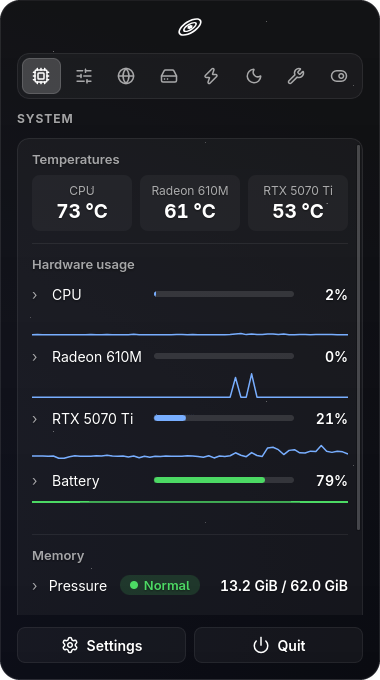
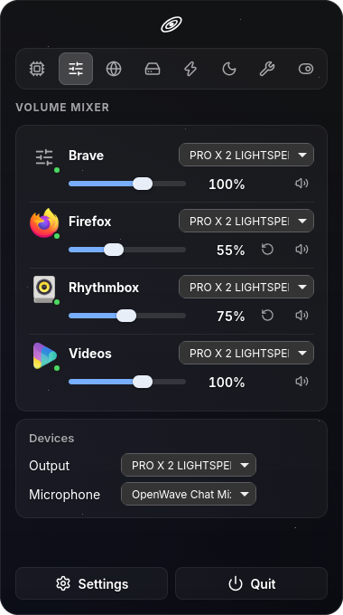
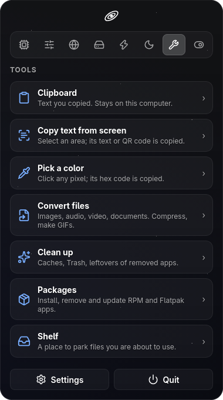
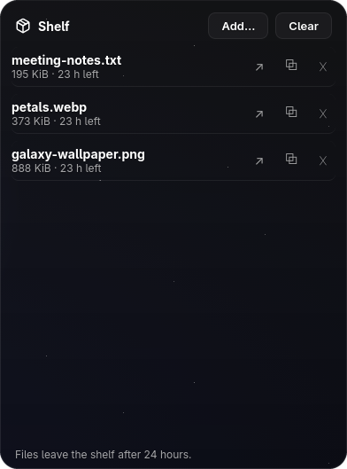
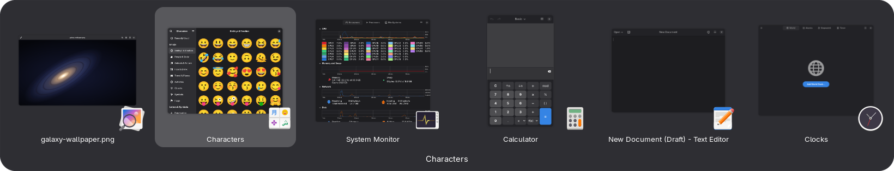

Shelf
Drop files on the box icon to park them; click it to drag them out again. Entries leave after 24 hours, or when you say.
For Fedora GNOME on Wayland
Temperatures, every GPU, per-app volume, clipboard history, screen text, file conversion and more, in one glass panel under one icon in the top bar.
0.1.0 pre-release · Fedora 44+ · GNOME 50 · GPL-3.0 · written in Rust

The utilities you would otherwise install one by one, sorted the way the panel sorts them.
Everything your machine is doing, read straight from the kernel.
Every app that plays sound gets its own slider, through PipeWire.

What is moving, where and through which interface.
Space, speed and health of every drive.
Where the battery goes.
For downloads, presentations and long builds.
Small jobs that otherwise need an app each. All of them run on your computer.

Quick switches for what runs in the background.
Plain numbers instead of graphs, and three optional drop targets for your files and copies.


Drop files on the box icon to park them; click it to drag them out again. Entries leave after 24 hours, or when you say.
Drop a file on the icon and choose WebP, JPEG, MP3, GIF, PDF or a smaller size. The result can go straight onto the shelf.
Your recent copies, images included. Click one to copy it again, then paste wherever you are.
Every shortcut works in every app and can be changed in Settings → Shortcuts.
Alt+Tab gets large live previews too: one per window, minimized ones included, grouped by app, each with its title. Press W to close a window without leaving the switcher.

0.2%
of one CPU core for the background service, at about 28 MB of memory. Written in Rust.
0
accounts, trackers and telemetry. The network is used only for the speed test and packages you ask for.
1
icon in the top bar. The panel opens right under it and quits a few minutes after you close it.
Fedora 44 or newer with GNOME 50 on Wayland.
Download it from the latest release, then:
sudo dnf install ./andromeda-*.rpmGNOME on Wayland only loads new extensions at login.
Open the Extensions app and turn on Andromeda. For the frosted blur, add andromeda under Applications in Blur My Shell.
Building from source: git clone https://github.com/Incept0s/andromeda && cd andromeda && scripts/install.sh